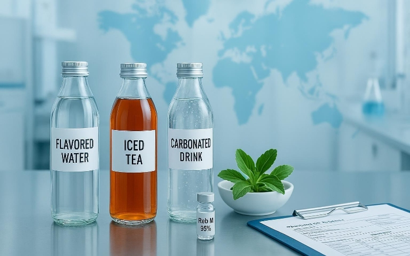

Industry Information
Home > News > Industry Information > Sweetening Beverages Naturally: How Stevia Is Revolutionizing the Drink Industry
Dec. 24, 2025
Natural sweeteners have moved from niche to mainstream as beverage companies reformulate to cut sugar, protect margins, and meet clean-label expectations. Stevia—specifically high-purity steviol glycosides such as rebaudioside A (Reb A) and rebaudioside M (Reb M)—now anchors many sugar-free beverages because it delivers high sweetness intensity at very low use levels. For procurement and sourcing teams, the practical questions are clear: which glycoside grades to specify, how to ensure regulatory fit across markets, and what formulation practices keep taste on target.
To orient readers who are mapping sweeteners to overall beverage systems, this site’s overview of additive families in drinks provides useful context in plain language; see the guide What additives are used in beverages.

Stevia refers to sweet components extracted or produced from Stevia rebaudiana leaves—collectively known as steviol glycosides. Commercial ingredients are refined to high purity, commonly ≥95% total steviol glycosides measured by HPLC, which allows consistent dosing and cleaner sensory outcomes relative to crude extracts. In beverages, stevia’s potency (hundreds of times sweeter than sucrose, depending on glycoside and matrix) enables deep sugar reduction while keeping labels aligned with the “natural sweeteners” preference.
Earlier generations of sugar-free beverages leaned on Reb A, which can present bitterness, a licorice-like aftertaste, and a delayed sweetness onset. Newer grades centered on minor glycosides such as Reb M and Reb D typically deliver a cleaner, more sucrose-like profile at beverage-relevant concentrations. Peer-reviewed sensory work in fruit beverages reports higher bitterness and astringency for Reb A-rich samples versus cleaner-tasting stevia systems, while recent reviews describe Reb M’s closer-to-sucrose temporal profile.
High-purity steviol glycosides and named rebaudiosides (including Reb M) have multiple FDA GRAS notices with “no questions” letters for use as general-purpose sweeteners in conventional foods, including beverages. Procurement should verify glycoside type, purity, and any production-route specifics against the relevant GRAS Notice before finalizing specs and labels. Representative primary sources include FDA’s GRAS letters for purified steviol glycosides GRN 702 and GRN 733 Part 1, and entries addressing Reb M (e.g., GRN 745 and the 2024 response GRN 1184). FDA letters often remind companies to follow 21 CFR ingredient-naming conventions rather than inferring common names from the GRAS text.
In the EU, steviol glycosides are authorized under E 960 with sub-entries distinguishing leaf-derived, enzymatically produced, and glycosylated forms (E 960a–d). EFSA maintains an ADI of 4 mg/kg body weight (as steviol equivalents) and summarizes uses across beverage categories. Typical working values cited in regulatory summaries include 80 mg/L steviol equivalents for flavored drinks (FC 14.1.4) and 150 mg/kg for fruit juices (FC 14.1.1) and fruit nectars (FC 14.1.3).
Teams must confirm exact numeric maximum permitted levels (MPLs) in the consolidated Annex II, Part E of Regulation (EC) No 1333/2008 before commercial release. See EFSA’s 2024 opinion ‘Steviol glycosides (E 960) – exposure and authorisations’ and the Food Safety Authority of Ireland’s additives list guidance pointing to Annex II conditions.
Flavored waters: Low flavor background exposes any off-notes. Favor Reb M or Reb D at minimal effective levels and consider micro-dose flavor maskers. Light texturants such as erythritol or polydextrose help restore a gentle body without compromising “natural sweeteners” positioning.
Ready-to-drink teas: Tea polyphenols can intensify bitterness and astringency. Reb M/D blends paired with bitterness suppressants and mouthfeel rebuilders are often effective. Calibrate sweetness onset with time–intensity sensory methods.
Carbonated soft drinks: Acidity and carbonation increase retronasal perception, making off-notes more obvious. Use Reb M judiciously, sometimes alongside a small sucrose fraction or compatible fast-onset sweetener to align the sweetness curve.
Fruit beverages (juices/nectars): Fruit flavor can mask residual off-notes, but concentration and mouthfeel tuning are critical. Polyols or fibers can restore body; ensure pH and storage stability.
Sensory and stability references include the 2024 blend study on mitigating side tastes Wong et al. (2024) and an acidic stability overview for Reb M IJPSR stability note.
Because stevia is high-potency and used at low levels, mouthfeel can thin out when sucrose is removed. Many beverage teams reintroduce body using erythritol, polydextrose, maltodextrin, glycerol, or select hydrocolloids. Blends can also reduce required stevia dose and soften off-notes, though they must be optimized to avoid amplifying bitterness. Trained panels and time–intensity methods help match onset and decay to target styles. Institutional summaries and reviews—see IFST’s information statement and the IFT journal review—provide useful baselines for planning.
Procurement should align specifications to JECFA, FDA GRAS notices, and EU additive specifications (Regulation (EU) No 231/2012). Key fields typically include:
Purity and principal glycoside: ≥95% total steviol glycosides (HPLC, dry basis). For Reb A grades, ≥80% Reb A within total SGs is common; for high-purity Reb M, ≥95% Reb M is typical. See FDA’s specification guidance in GRN 882 (JECFA-aligned purity definition).
Residual solvents: Methanol ≤200 ppm; ethanol ≤5,000 ppm—representative limits reflected in GRAS letters such as GRN 702.
Heavy metals: Typical maxima per EU/JECFA include Pb ≤1 ppm, As ≤1 ppm, Cd ≤1 ppm, Hg ≤0.1–1 ppm; confirm product-specific thresholds against EU 231/2012 entries.
Microbiology: Total plate count ≤1,000 cfu/g; yeast/mold ≤100–1,000 cfu/g; pathogens negative in 25 g—aligned to common food-grade specifications.
Documentation: COA and TDS for each batch; non-GMO and organic declarations where applicable; halal/kosher certificates; allergen statements; traceability from leaf/fermentation through purification. For import contexts, FDA’s Import Alert 45-06 distinguishes stevia leaves from steviol glycoside extracts.
For broader sweetening context in juice and flavored water, the internal resource Juice additives and preservatives outlines how natural sweeteners fit within category systems.
A procurement team planning a new flavored water SKU can specify a high-purity stevia grade (e.g., Reb M 95%) and request COA/TDS plus non-GMO/organic status documentation. The team shares the sweetness target (sucrose equivalence), beverage pH, and flavor system constraints with R&D. A small-scale bench test confirms dosage, mouthfeel restoration (e.g., polydextrose), and any micro-dose maskers. EU-bound SKUs undergo MPL checks against Annex II for FC 14.1.4; U.S. SKUs reference the relevant FDA GRAS letters for labeling and scope. Once validated, procurement locks the specification, lead times, and logistics, and requests batch COA with every shipment.
When contrasting natural sweetening approaches (e.g., flavor-forward juices using malt extract versus high-potency natural sweeteners), see the explainer The role of malt extract in juice additives.
Procurement and sourcing teams can move quickly with a one-stop stevia portfolio covering Reb A and Reb M grades, with organic and non-GMO options and stable supply. To evaluate fit for upcoming beverage SKUs—flavored waters, RTD teas, carbonates, or fruit beverages—request a quote or a stevia sample and include your target specification, market scope (U.S./EU), and desired documentation.

Goliath Ingredients Holding Limited
1st Floor, Ellen Skelton Building, 3076 Sir Francis Drake’s Highway, Road Town, Tortola, VG1110, British Virgin Islands.
henry@goliathholding.com
Navigation
Email: henry@goliathholding.com